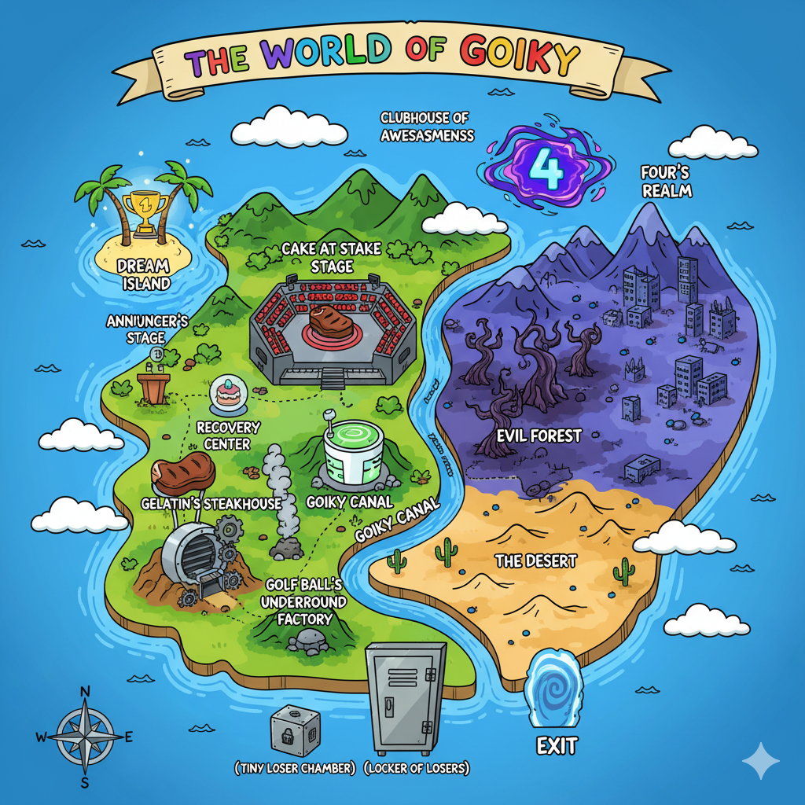

Fan Cannon|BFDI Universe
Fan Cannon|BFDI UniverseThe Universe Guide
Battle for Dream Island is an American animated web series created by twin brothers Cary and Michael Huang — who started making it when they were just 12 years old. The show features anthropomorphic inanimate objects competing in Survivor-style elimination challenges, with viewers voting to decide who stays and who goes. First premiering on January 1, 2010, it became the first-ever "object show" and spawned an entire microgenre of similar series. The show is hosted on the YouTube channel jacknjellify and has grown across 6 seasons over 16 years, building a passionate community known as the Object Show Community (OSC).

Test your knowledge and explore the BFDI universe
55 trivia questions across all seasons. Survival & Score modes.
Choose your own adventure. Pick a team, face challenges, win Dream Island.
You've been eliminated. Break out of the Tiny Loser Chamber before dawn.
Fill in the blanks and create 20 hilarious BFDI stories!
Visual guides to the BFDI universe — tap to view full size
16 years of object show history
Things you might not know about BFDI
The growth of jacknjellify on YouTube — from a small Flash animation channel to 3.3 million subscribers and 2.5 billion views.
Test your knowledge of the BFDI universe!
100 questions covering characters, seasons, lore, and behind-the-scenes history. How many can you get right?